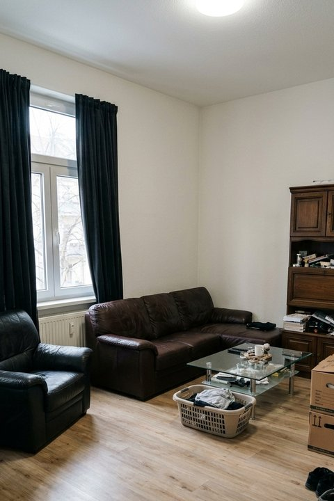
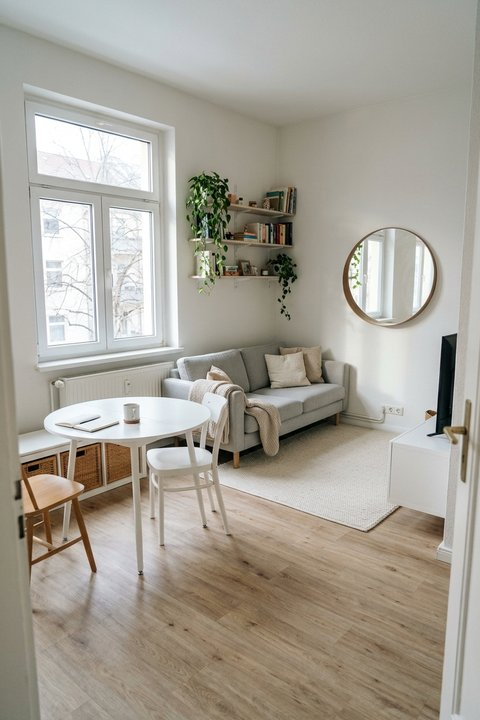

Kleine Wohnung vorher/nachher: 7 Platzspar-Tricks fürs Wohnzimmer


Dasselbe Zimmer, rund 14 m²: links zu große, dunkle Möbel, rechts derselbe Raum mit sieben einfachen Tricks. Es geht nicht darum, mehr zu kaufen, sondern die richtigen Größen und mehr Platz an der Wand.
Die 7 Tricks
1. Ein kompaktes Sofa statt einer Eckcouch
Eine Eckcouch blockiert in kleinen Räumen oft die halbe Fläche. Ein Dreisitzer mit schmalen Armlehnen (ca. 180–200 cm breit) bietet fast genauso viel Platz zum Sitzen. Sofas auf Beinen wirken leichter, weil man den Boden darunter sieht.
2. Regale an die Wand statt Schrankwand
Schwebende Wandregale über dem Sofa nehmen keinen Boden weg. Je höher sie hängen, desto größer wirkt der Raum. Ohne Bohren: ein schmales, hohes Regal statt einer breiten Kommode.
3. Ein runder Tisch, der Esstisch und Schreibtisch ist
Runde Tische haben keine Ecken, an denen man hängen bleibt, und passen in Fensternischen. Ausziehbar ist er im Alltag klein und für Besuch groß genug.
4. Sitzbank mit Körben unter dem Fenster
Der Platz unter dem Fenster ist meistens ungenutzt. Eine niedrige Bank mit Körben ist Stauraum und zusätzlicher Sitzplatz am Tisch zugleich. Den Heizkörper frei lassen.
5. Ein großer Spiegel
Ein runder Spiegel mit 60–80 cm Durchmesser gegenüber oder neben dem Fenster verdoppelt das Tageslicht und lässt den Raum tiefer wirken. Der günstigste Trick mit dem größten Effekt.
6. TV-Board an die Wand
Ein flaches, wandhängendes Lowboard statt eines klobigen TV-Schranks. Der Boden darunter bleibt sichtbar – das lässt den Raum größer wirken.
7. Helle Farben und leichte Vorhänge
Dunkle, schwere Vorhänge schlucken Licht. Helle Leinenvorhänge, ein heller Teppich und Kissen in zwei, drei ruhigen Farben machen das Zimmer sofort luftiger. Für die Abende: 3 Lichtstimmungen im Vergleich.
Was kostet das?
| Trick | ca. Preis |
|---|---|
| Kompaktes Sofa, Dreisitzer | 300–700 € |
| Wandregale (3 Stück) | 30–60 € |
| Runder Tisch, ausziehbar | 100–250 € |
| Sitzbank + Körbe | 60–150 € |
| Runder Spiegel, 60–80 cm | 25–70 € |
| Wandhängendes TV-Board | 60–150 € |
| Helle Vorhänge, Teppich, Kissen | 60–150 € |
Richtwerte für Deutschland, Stand November 2026. Die Preise schwanken je nach Händler und Saison.
Mit wenig Geld anfangen – unter 150 €: Spiegel, helle Vorhänge und Wandregale. Und das große Möbelstück, das am meisten Platz frisst, verkaufen.
Tipp: Gebrauchte Sofas und Tische über Kleinanzeigen kosten oft die Hälfte. Vor dem Kauf den Grundriss mit Kreppband auf dem Boden markieren.
Häufige Fragen
Was tun, wenn ich nicht bohren darf?
Hohe, schmale Regale an die Wand stellen, einen Spiegel anlehnen statt aufhängen und ein TV-Board auf Füßen nehmen. Der Effekt ist fast derselbe.
Womit fange ich an?
Mit dem größten Möbelstück, das zu viel Platz nimmt – meistens das Sofa oder die Schrankwand. Ist es weg, sieht man erst, wie groß der Raum wirklich ist.